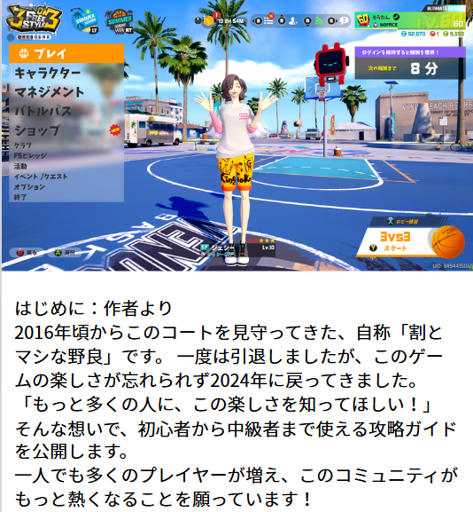
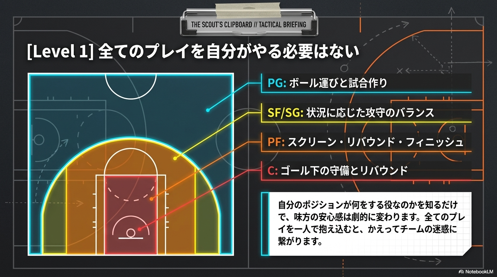
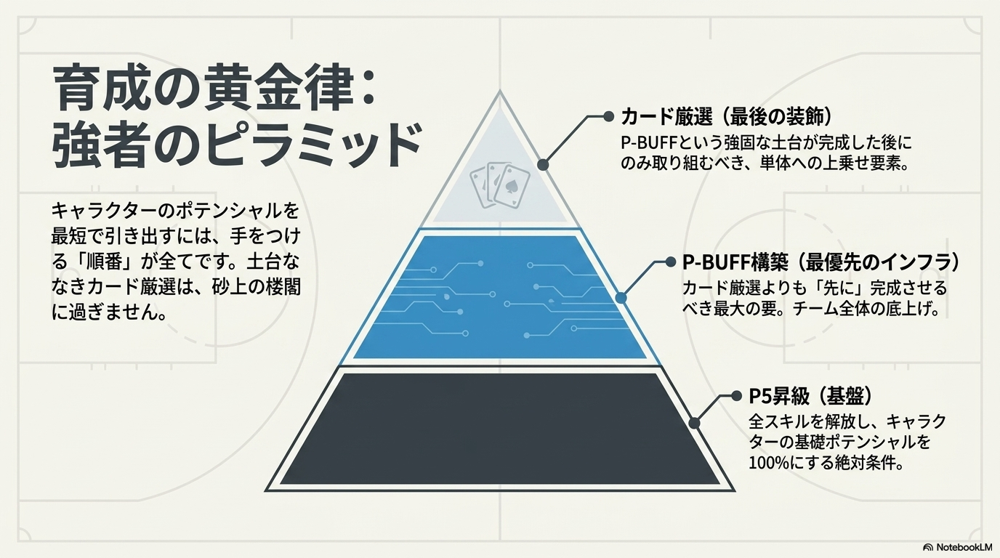
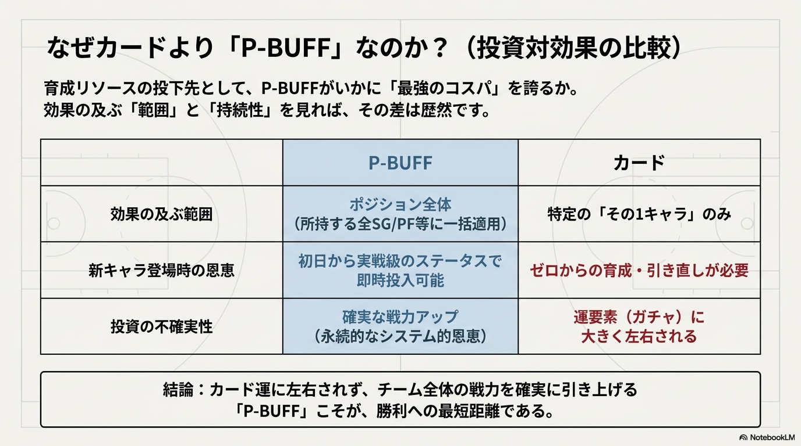
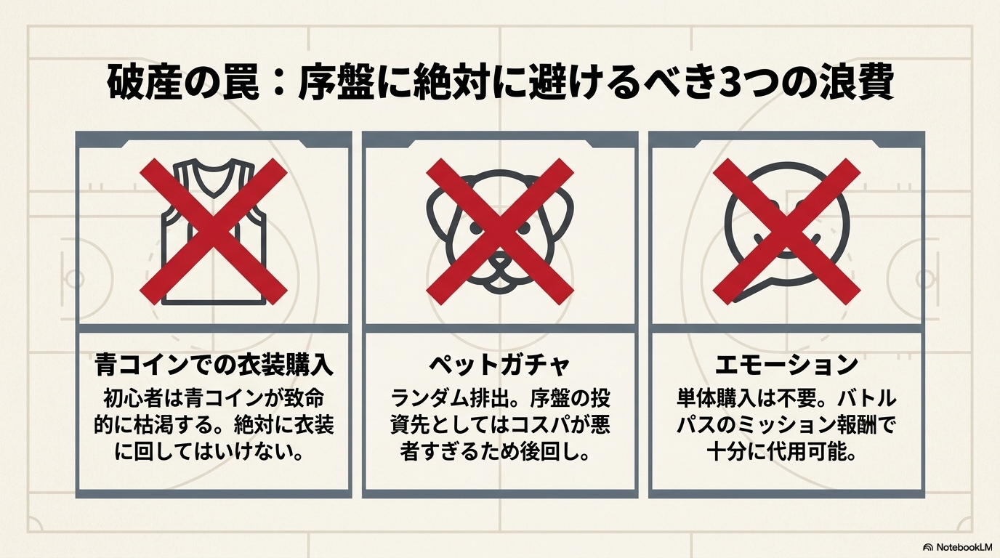
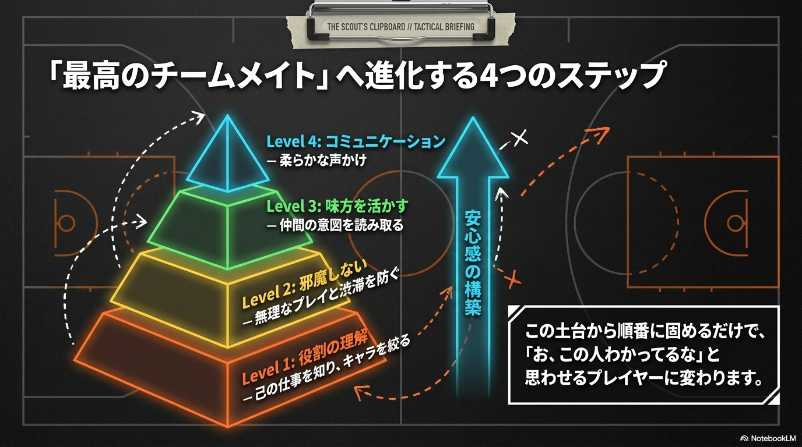
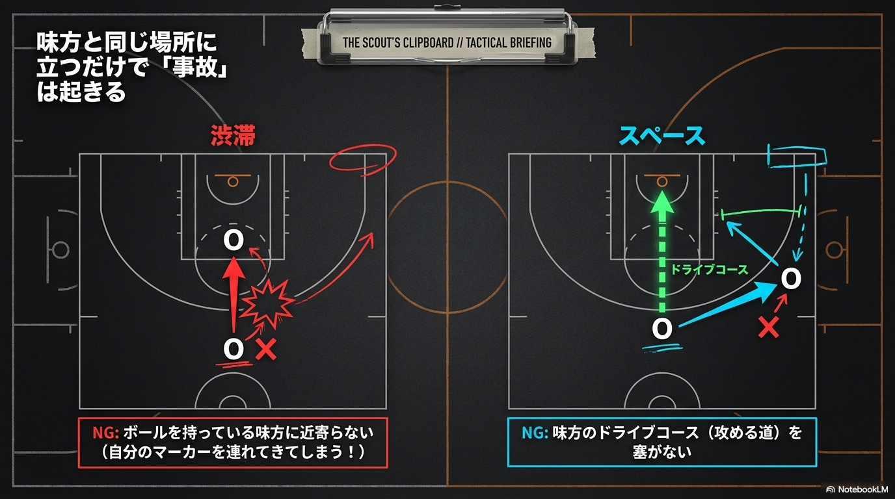
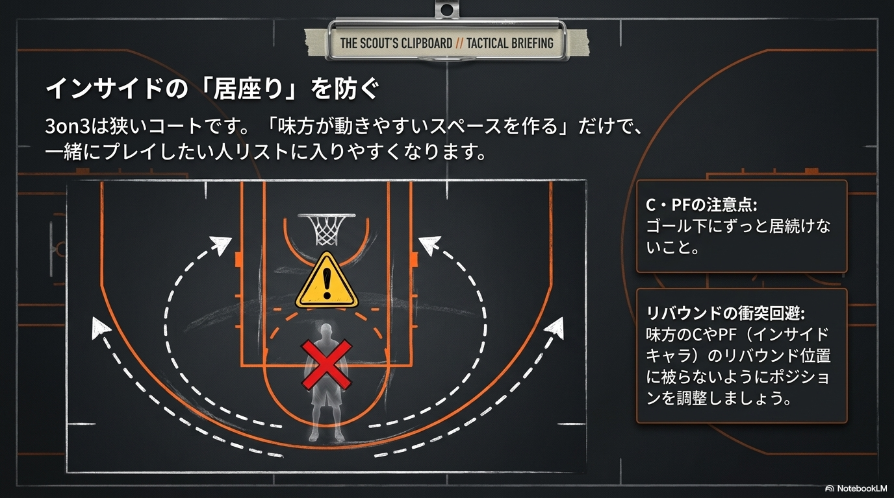
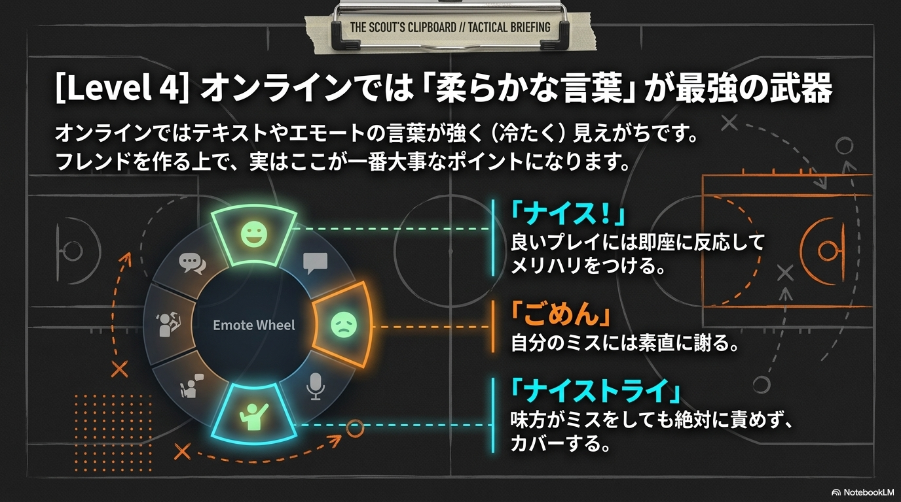

PING MAP
アジア・日本圏 サーバーPing可視化マップ
Ping (応答速度) の目安
非常に快適 (< 30ms)
快適 (30-60ms)
プレイ可能 (60-90ms)
遅延あり (> 90ms)
東京サーバー接続時
日本国内からは一貫して低いPing（遅延）で接続可能です。
特に関東周辺からは1桁msの極めて快適な環境でプレイできます。
注目ポイント: 九州地方
現在のPing:
22ms
注目ポイント: 台湾の経路
現在のPing:
35ms
パケットアニメーション
光の粒（パケット）がサーバーへ向かう速度はPing値に連動しています。Pingが低いほど高速で移動します。
VIDEOS
キャラクターカードをクリックすると解説・紹介動画が再生されます！
MUSIC
楽曲カードをクリックすると、YouTubeのBGM動画が再生されます！
SURVEY & PING LOG
あなたの地域と実際のPing値を投稿してください！
Ping値 投稿フォーム
ABOUT ME

ABOUT ME
2016年頃からこのコートを見守ってきました。一度引退しましたが、2024年に戻ってきました。
攻略ガイド等を公開しています。
ROAD TO HIGH TIER
STEP 1
ポジションの特徴

PG
パスと機動力。守備の要。
SG
最高得点能力。多彩なスキル。
SF
攻守に貢献する万能型。
PF/C
ゴール下の番人。リバウンド。
STEP 2
おすすめキャラ
無課金・初期のおすすめ
Murdock (PF): ブロック力が高く、最高の選択肢です。
最強キャラ (Premium)


STEP 3
育成手順

強者のピラミッド。P5昇級が基盤です。

P-BUFFはカードより圧倒的に効率が良いです。

STEP 4
チームプレイ

Level 1 & 2


Level 3 & 4

DATABASE
P-BUFF
Q&A
Q: 数値の「▲」は何？
A: バフ値（強化分）です。
Q: 育成はP-Buffとカードどちらが先？
A: P-Buffが先です。